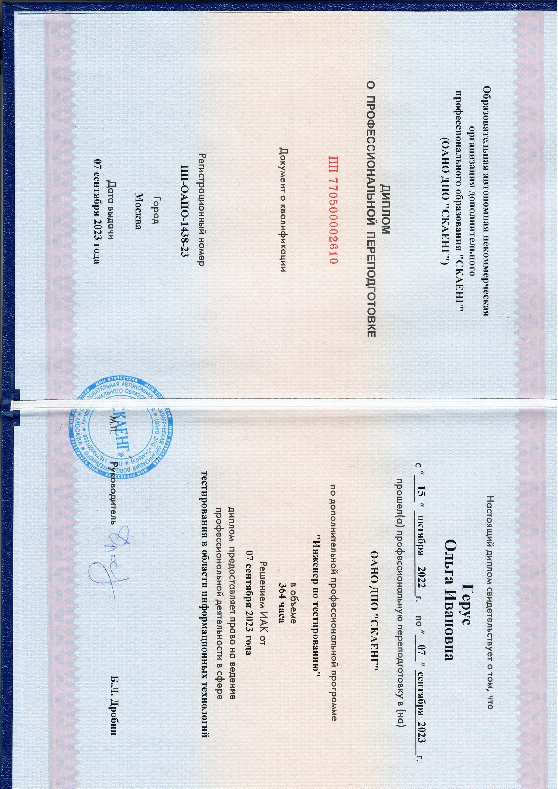

С февраля 2023 г я впервые начала изучать этот язык. Я закончила несколько курсов и продолжаю обучение. В школе и университете был опыт изучения немецкого языка. Я с удовольствием читала и переводила разные тексты. Моя главная цель при изучении английского языка - знакомиться и общаться с людьми из других стран.
В октябре 2022 г я увлеклась новым для меня направлением. Верстка сайтов, адаптация их под мобильные приложения, тестирование мобильных приложений и т.д. Многое еще предстоит узнать. На данный момент я прошла обучение в Skypro (инженер по тестированию) и закончила курсы по HTML/CSS.
Неотъемлемым атрибутом моей жизни с детства является музыка: классическая, народная, популярная. Я закончила музыкальную школу по классу фортепиано, много лет пела в школьном хоре, занималась народными танцами, народным вокалом, играла на домре и ложках. Люблю слушать живое исполнение в любом жанре.